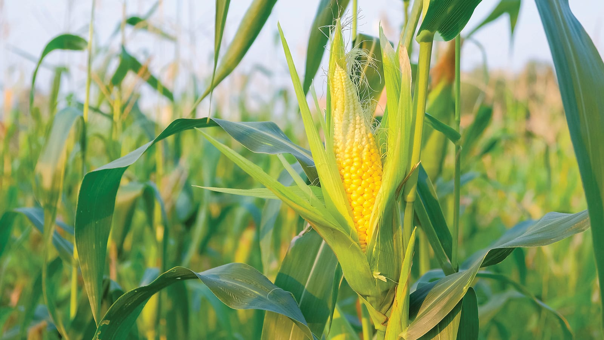
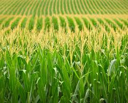

Corn is used in a variety of ways. One of the commonly known ways that corn is used is in FOOD! We often enjoy foods made from corn such as corn on the cob, popcorn, cornbread, and corn pudding. Other foods that contain corn are bakery foods like bread, crackers and muffins, cereals like Corn Flakes, Kix and Cheerios, grits, tortillas and tortilla chips, soft drink sweeteners, chewing gum, peanut butter, and other food products such as corn syrup, cornmeal, and cornstarch. Corn is everywhere!
In addition to being a key ingredient in many foods that humans consume, corn is also used in pet food and to feed cattle. In fact, almost half the field corn in the United States is used to feed animals.
Corn is also a source of renewable energy for fuel ethanol production. Refineries turn corn into ethanol, a fuel that can be mixed with gasoline to power cars.
Corn can also be made into a special plastic that is biodegradable which can be transformed into products such as straws, packaging and even fashion! For example, the shoe company Reebok released an eco-friendly shoe made entirely from cotton with a corn-based sole. In addition to being used to create biodegradable products, corn is in many of our everyday products such as aspirin, diapers, fireworks, glue, hand soap, ink, laundry detergent, lipstick, matches, paint, toothpaste, and wax paper. WOW! Ultimately corn plays an important role in our daily lives as do the many people involved in the process of turning corn into everyday products. So, the next time you brush your teeth or wash your hands with soap, think about a farmer!
